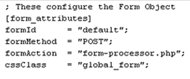
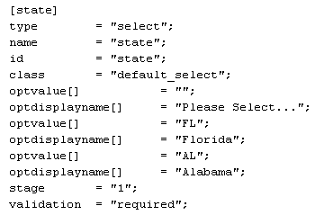

This document describes and outlines the use of the Compass Knowledge Group form application. The purpose is to standardize not only the output of this organization's web forms, but also their configuration, rules, and capabilities. The base application can be included in any static PHP file, and we also support a WordPress plugin version containing the same classes, just additional WordPress-required functions and some other added convenience features.
The form application creates a form based upon the values and layout of an ini file. It is important that these files are constructed correctly, otherwise the form will not look or function as expected.
Each form is identified by an ID that matches the filename of the ini. If the file is named incorrectly and the form application cannot find the associated file, it renders the default.ini
Each element is indexed by a name and has certain attributes like 'type', 'class', 'stage', etc.
Elements have required and accepted attributes. If an element is missing a required attribute, or tries to pass an unknown attribute, a warning will be displayed at the top of the form.
The order in which elements are placed in an ini determines the order they appear on the form.
 This element defines the attributes of the form. It should be the first element defined in your ini file, though the form will not break if it's not. Typically nothing about this element will change except for the 'formId' or optionally the 'cssClass' Always use relative paths for the formAction attribute (e.g. '/form-api/app/form-submit.php'). Setting an absolute path, to a dev server for example, will only ensure it not function when moved to production.
Text inputs will be the most common inputs you create (Names, Phone Numbers, Zipcodes, etc). Like all other input elements, they require a name and an id. You can optionally define CSS classes, Stage position, a default value, and validation rules for these elements. Invoking the JavaScript toggleFieldValues function will enable the onBlur/onFocus toggling of the default values defined in the ini. Textarea inputs are constructed the same way as text inputs, but they can accept two additional attributes, 'cols' and 'rows'.
 Select inputs can be created to retrieve preset information like, State, Program, Interest, etc. Instead of defining a default value, we need to define a group of options. We do this by passing 'optvalue[ ]' and 'optdisplayname[ ]' attributes. Please make sure these are ordered corrected as optvalue then optdisplayname then optvalue then optdisplayname. If these are out of order, they wont produced a valid select input. Typically, it is best-practice to have the first element display a message like 'Please Select...' and set that to an empty value.
These input types are constructed in virtually the indentical manner to each other. Just create the standard 'name', 'id', and 'value' attributes and pass any additional 'stage', 'class', or 'validation' values.
Sometimes we will want to use the label tag to identify inputs on our form (especially on our radio and checkbox inputs). The label element has the standard attributes of 'id', 'class', and 'stage', but you should assign the 'for' attribute to associate it with its input. The 'value' attribute will be what is displayed as the label. Additionally, label elements can be a way of injecting other HTML directly into the form object. Just set the label's value to any well-form HTML for output to a browser.
Each element in the ini file can accept a value called 'stage'.
This is a numeric representation of which group the element belongs to.
The form application loops through these elements creating fieldsets when new stages are declared (stage = 1, stage = 2)
When the JavaScript useStages(formID) function is called, each fieldset except for the first is hidden, and
on the click event of the 'submit' button the next stage is presented.
Note that the submit button is always removed from all fieldsets and placed at the bottom of the form for constant visibility.
Certain rules can be enforced on inputs like a zipcode field should only contain numbers, or an email field should match a standard email expression 'name@domain.com' By setting a validation attribute on your input you can pass which type of validation to perform. Listed below are the current validation types and descriptions.
The validation JS is output to the browser by default, and will run on keydown and mousedown on the submit button events. Error labels will prepend the invalid input and a class of 'invalid' will be added to the error label and its input.
After the ini is created, the hard-work is over! Now, just include the application's init.php file, create the object and output it to the page.
require_once('form_init.php'); //we have added this script to our servers' PHP include path
$form = new Form('theIDofYourForm');
$form->printFormJS();
Then place this wherever you want the form to appear:
echo $form->renderForm();
If you are using the WordPress plugin of the form application, then the init is already loaded, and you can just create your form object, print the JS, and render the form on a template page. Whatsmore, if you are also using the Landing Page WordPress plugin, then you do not have to configure any PHP code. It is already set in the header and form template modules.
The form already includes all of our JavaScript libraries and form-specific validation scripts. However, you must call these functions in the head of your document wrapped in a jQuery doc-ready function. Make sure you pass the ID of your form to these functions because we may have multiple forms on the same page. Essentialy, only the useStages() function is required. However, assigning an anonymous function to a variable named extra_callback will let you run custom code after the form submits. Similarly, you can use extra_error for code to be executed on validation errors.
jQuery(document).ready(function(){
toggleFieldValues('#YourFormID');
useStages('#YourFormID');
jQuery('#YourFormID #YourResetButton').click(function(){
reset_button('#YourFormID');
});
extra_callback = function(){
this runs on succesful form submission
});
extra_error = function(){
this runs if there is a validation error
});
});
We have also added a new extendable method that can replace the extra_callback function. You can bind and function to the "formSuccess" event. The reason for this is that the old extra_callback can only be defined once, whereas you can attach an infinite number of events to "formSuccess".
jQuery(document).bind("formSuccess", function(){
$('#form_title, #intro_text').remove();
});
Important: Instead of call both the toggleFieldValues and useStages function, you may now call them both with the following function. The old function call will still however work.
ckgFormInit('#YourFormID');
Most forms only have one 'thank you' message. In this case, simply id an element: 'default_thankyou' and the contents of the element will replace the form content on successful form submission. If however, you have different thank you messages for different program codes, likely generated from a select dropdown list, then you can also achieve this easily. Give your elements the same ID as the program name, just replace the spaces with underscores. So, 'EKU BS OS' would be 'EKU_BS_OS'. The form application will grab the contents of the element that mathces the user's selected value.
Make sure all of the initial page trackers are declared BEFORE calling the form JS.
A page's goal tracker value can be set in the form as a hidden field with the ID of goal_tracker.
Firing conversion codes requires placing that script or tracking image in the extra_callback function.
extra_callback = function(){
$('body').append('< img src="conversion_code.gif" />');
}
The Form API which interacts with GoldMine will either send back an XML record of a successful insert, or an error message.
Instead of outputting this message to the browser, checking it in the 'net' section of firebug is suggested.
Simply view the respose from the post data that was sent to the processing script (e.g. /form-api/app/form-submit.php)
If the user does not have JavaScript enabled, they will be directed to the form processing page and receive a generic thank you before being redirected back to the referring page after five seconds.